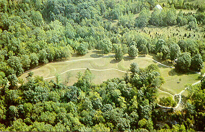
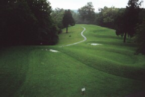
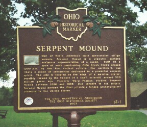

Serpent Mound

The most ancient of Ohio's forgotten mysteries, Adams County’s Serpent Mound, is not haunted in the classical sense. No vengeful ghost walks there at midnight (as far as anyone can tell); no axe murders are reenacted when the moon is full. But to the ancient Indians who built it, the great effigy mound definitely was a spiritual place.
Human beings have lived in North America since the Wisconsin glacier retreated in about 15,000 BCE. The first cultures-the Fluted Point, the Plano, the Archaic-left behind little more than carved stone tools and, occasionally, human remains. It wasn’t until the advent of the Adena Culture around 1000 BCE that the earliest residents of North America began building burial and effigy mounds. The Adena are best known for the former, and because of the number of burial mounds they left behind a lot has been learned about who they were. It’s known that they hunted and farmed in the Ohio Valley for several thousand years. The men grew to an average height of about 5”6’, the women to 5”2’. Adena Indians modified their bodies in some extreme ways. One common practice was head deformation. A board would be fastened tightly across a baby’s head for weeks, flattening his skull as it developed.
The Great Serpent Mound was treated with great reverence by the Adena, who buried their dead beneath dozens of small mounds in the vicinity, but never inside the mound itself. It was built on a point overlooking the Brush Creek Valley, from yellow clay taken from three pits in the area, and is more than 1300 feet long. The body, which curves back and forth from a spiral-shaped tail, ranges in width from three to twenty feet. The head of the snake is represented by a large oval shape, which may be an egg it’s eating, or might also be the snake’s open mouth as it strikes.

There’s little doubt that the Serpent Mound was used in religious ceremonies by the Adena, and possibly by the later Hopewell Indians, who built their own elaborate earthworks in the area. When settlers first discovered the mound, there was a fire-scorched stone monument in the egg-shaped head, which probably means it was used as an altar of some sort. It’s also theorized that the Adena might have performed human sacrifice in the mouth of the serpent; aside from blackened stones, ceremonial knives have been unearthed there. Other evidence lies in the number of headless skeletons which have been discovered in gravesites nearby.
Over the years the Serpent Mound site has gained a reputation as a "mystery spot"--a place where unexplained things happen with some frequency. Whether this condition inspired the effigy or is caused by it, the legends persist. It’s said that the dead moundbuilders make occasional appearances, and that other odd things tend to happen in the park which now surrounds the mound site. In 1966 it was placed on the National Register of Historic Places. Today the Great Serpent Mound Park is tended by the state and is easy to visit on State Route 73 north of Peebles. Being there after dark is not advisable for a number of reasons.

For more information about Serpent Mound, visit one of the following links:
Ohio Historical Society: Serpent Mound
GreatSerpentMound.org
Artcom Museums Tour: Serpent Mound State Memorial
Back
Sources
Adams County, Ohio: Celebrating 200 Years. Paducah, KY: Turner Publishing Company, 1998.
Beckwith, Rodney. "The Den of the Serpent." Southeast Ohio. Winter 1999: 10-11.